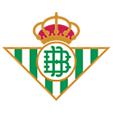
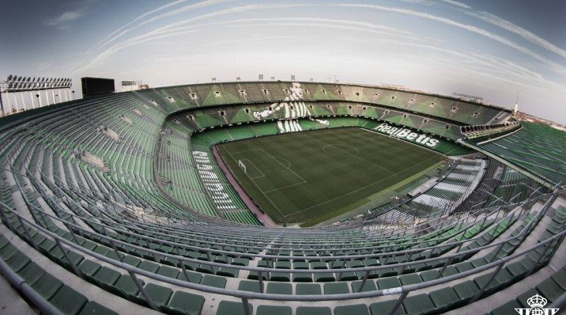

Escudo del Betis
 Pagina WebPresidente del Betis
Su wikipediaEstadio del Betis
 Wikipedia Benito VillamarinInformacion General Sobre el club
El Real Betis Balompié fue fundado el 12 de septiembre de 1907. El título honorífico de Real lo recibió en el año 1914, siéndole otorgado por el Rey Alfonso XIII.
La denominación de Real Betis Balompié se caracteriza por ser una de las pocas del fútbol nacional con vocablos de origen exclusivamente castellano, y la más antigua con esta característica.
Sus máximos galardones son un Campeonato de Liga, obtenido en la temporada 1934-35 y dos Copas del Rey, que se adjudicó en los años 1977 y 2005.
Fue el primer equipo andaluz que jugó en la Primera División española y, asimismo, el primero en jugar la Liga de Campeones de la UEFA en el actual formato.
Junto a esto, ha sido dos veces subcampeón de la Copa del Rey y, en una ocasión, de la Supercopa de España.
El Real Betis Balompié juega sus partidos como equipo local en el Estadio Benito Villamarín, patrimonio del club al igual que la Ciudad Deportiva Luis Del Sol, situada a apenas 200 metros del propio estadio y donde juegan todos los equipos de la cantera.
El coliseo verdiblanco tiene capacidad para albergar a 60.271 espectadores El recinto bético se encuentra situado en el barrio de Heliópolis, en el paseo de la Palmera. La cifra de socios de la entidad ha crecido significativamente los últimos años y en la actualidad supera los 50.000 socios.
En cuanto a Peñas, el club verdiblanco es el cuarto equipo de España con mayor número de ellas, por encima de las 450, con agrupaciones peñistas no sólo en España y en Europa, sino en zonas tan lejanas como EE.UU., Australia o Zanzíbar. Lo cual pone de manifiesto el carácter universal que le ha sido propio desde su fundación.
El club goza de una cantera prolífica que ha dado futbolistas al primer equipo a lo largo de su historia. Hasta 17 son los equipos canteranos que conforman en la actualidad la fábrica verdiblanca.
Junto a todo esto, el Real Betis Balompié se ha convertido en las últimas temporadas en un club multidisciplinar que incluye nuevas secciones que potencian aún más si cabe el nombre de la entidad y permiten un desarrollo deportivo como no se había conocido en la ciudad de Sevilla.
El club cuenta con un equipo femenino en la máxima categoría del fútbol español, el Real Betis Féminas, y, asimismo, dispone de un equipo de baloncesto, el Real Betis Energía Plus, y otro de Fútbol Sala, el Real Betis Futsal, que juegan en el segundo escalón nacional de cada una de estas disciplinas deportivas.